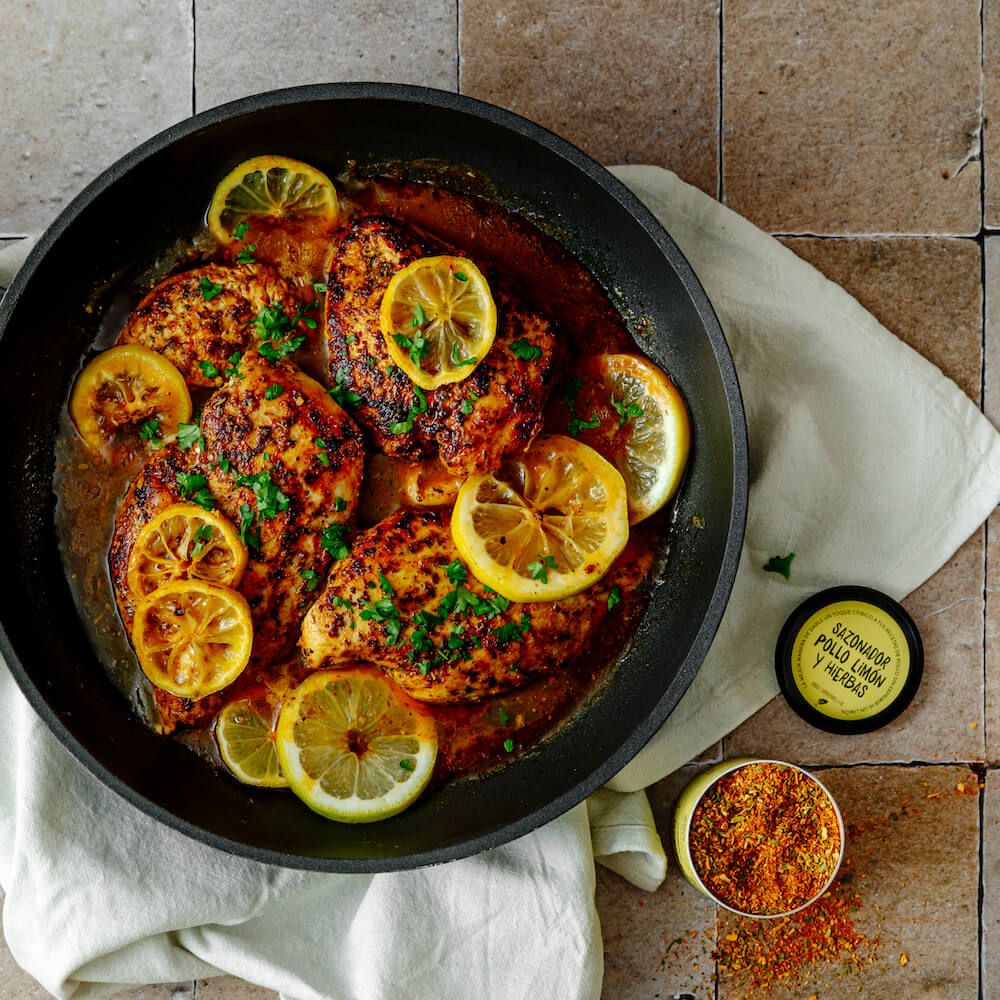

🍋 Pechuga de pollo al limón

🟢 Saludable | 💪 Alta en proteína | ⚡ Fácil
⏱️ Tiempo: 30 minutos
Una receta básica de carne muy limpia, jugosa y llena de sabor,
ideal para preparar en cantidad para la semana.
🛒 Ingredientes:
- 2 pechugas de pollo sin piel
- Jugo de 2 limones
- 2 dientes de ajo finamente picados o machacados
- 1 cucharadita de hierbas secas (orégano, tomillo, romero)
- 1 cucharada de aceite de oliva
- Sal y pimienta al gusto
👨🍳 Preparación:
-
Precalienta el horno a 200°C.
-
En un recipiente mezcla el jugo de limón, ajo, aceite,
hierbas, sal y pimienta para crear la marinada.
-
Coloca las pechugas de pollo en un recipiente apto para horno
y cúbrelas con la mezcla. Déjalas reposar 10 minutos.
-
Hornea durante 20 a 25 minutos hasta que estén completamente cocidas.
Déjalas reposar 5 minutos antes de cortar.
💪 Beneficios:
Bajo en grasa, alto en proteína y perfecto para una alimentación saludable.
⭐ Consejo:
Puedes acompañarlo con vegetales, arroz integral o ensalada
para obtener una comida más completa.